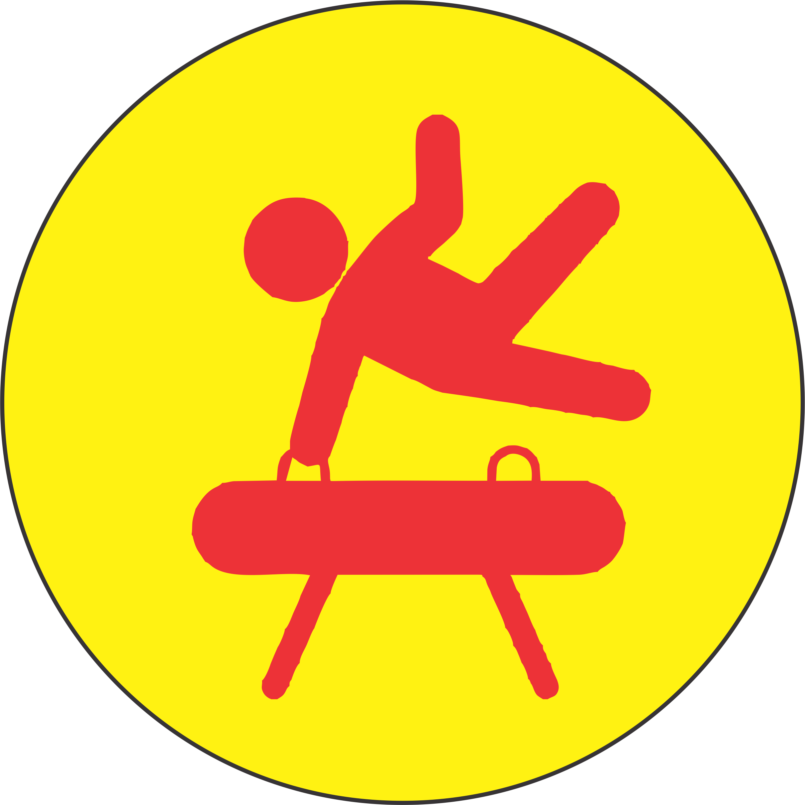

VESTIBULAR
The vestibular system explains the perception of our body in relation to gravity, movement and balance. The vestibular system measures acceleration, g-force, body movements and head position. Examples of the vestibular system in practice include knowing that you are moving when you are in an elevator, knowing whether you are lying down or sat up, and being able to walk along a balance beam.
